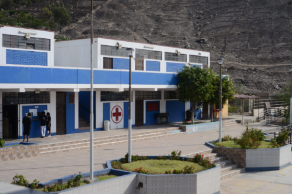

Es un honor darles la más cordial bienvenida a la página oficial del Instituto de Educación Superior Tecnológico Público Huaycán. Estamos ubicados en el corazón de la comunidad de Huaycán, y nuestra misión es ser un pilar fundamental en el desarrollo profesional y personal de nuestros estudiantes. En el IESTP Huaycán, nos dedicamos a formar profesionales técnicos altamente capacitados, listos para afrontar los desafíos del mercado laboral actual y contribuir activamente al progreso de nuestra sociedad. Ofrecemos una educación de calidad, con programas de estudio actualizados y docentes comprometidos con la excelencia académica y la innovación./p> 